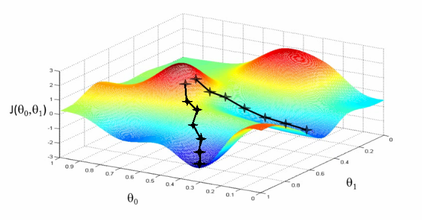
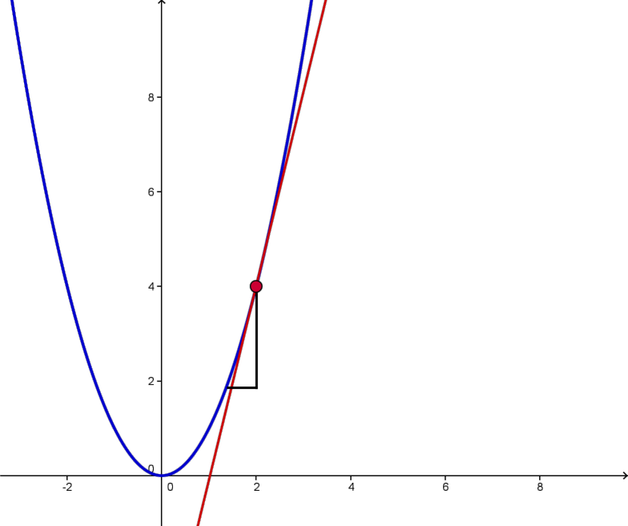

Linear Regression I Exercise Solutions (linreg1.tar.gz)
These notes are based on Andrew Ng's online course found hereDefinitions
$/n_m/$
$/x/$
$/y/$
$/h : x \rightarrow y/$
Hypothesis: The function used to map $/x/$ to $/y/$ for predictions, not to be confused with other kinds such as scientific hypotheses
$/(x^{(i)}, y^{(i)})/$
The $/i^{th}/$ training example
Model Representation
So how do we represent $/h/$?
The line equation: $$h(x) = \theta_0 + \theta_1 x$$ Clearly here we have only one feature, though there can potentially be more than one. It is possible to then express the hypothesis as: $$h(x) = \theta_0 + \theta_1 x_1 + \theta_2 x_2$$
Note: can be notated as $/h_{\theta}(x)/$ for clarity.
This generalizes to a hyperplane: $$h(x) = \sum_{i=0}^{n}{\theta_i x_i}$$ Where we let $/x_0 = 1/$ for conciseness (a feature that is always 1 to form the intercept).
Vector notation for those who like to be efficient: $$\boldsymbol \theta \cdot \mathbf x = \boldsymbol \theta^\top \mathbf x$$
Cost Function
Used to fit the parameters of the models.
$/\theta_i/$ : These are known as parameters, and are what we want to solve for.
To fit the line, attempt to make $/h_\theta(x)/$ close to $/y/$ from the training set.
We can try to minimize $/\theta/$ for the following function (cost function):$$J(\theta) = \frac{1}{2n_m} \sum_{i=1}^{n_m} {(h_\theta(x^{(i)}) - y^{(i)})^2}$$
Note: This is just the mean squared error. The division by 2 simplifies differentiating. $/J(\theta)/$ is just some extra notation that will be used.
Note 2: The minimization is also known as
Gradient Descent
A fairly general algorithm used in many different problems:
- Start with some $/\theta_0, \theta_1/$ (e.g. $/(0, 0)/$)
- Keep changing $/\theta_0, \theta_1/$ to reduce $/J(\theta_0, \theta_1)/$ until a minimum is reached

We can start by asking, if we were to take a step, which direction would result in the greatest decrease (seems like a greedy algorithm). In mathy pseudocode:
Repeat until convergence { $$\theta_j := \theta_j - \alpha \frac{\partial}{\partial \theta_j}J(\theta_0, \theta_1),\forall j$$ }
$/\alpha/$ is called the 'learning rate' and controls the size of the step. This is clearly only good for finding local minima though.
Note that we are updating $/\theta_0, \theta_1/$ in this case but are also using them in $/\theta_j - \alpha \frac{\partial}{\partial \theta_j}J(\theta_0, \theta_1)/$. Temp variables, wink wink nudge nudge.
Some intuition: imagine that the partial derivative $/\frac{\partial}{\partial \theta_0}J(\theta_0, \theta_1)/$ has a positive slope. This means that as $/\theta_0/$ increases, $/J(\theta_0, \theta_1)/$ increases, and by subtracting from the partial derivative, we clearly decrease $/J(\theta_0, \theta_1)/$. Works similarly in the negative slope case due to the negation.

If $/\alpha/$ is either too small or too large, it can take too long or overshoot, respectively.
Interestingly, as we approach a local minimum, the slope decreases and will force smaller steps with constant $/\alpha/$(kindergarten math, a tangent's slope decreases as it reaches local minimum and switches signs. Minima/Maxima have tangents with slope 0).
Gradient Descent for Linear Regression
Recalling the cost function from before, we can compute its partial derivatives: $$J(\theta) = \frac{1}{2 n_m} \sum_{i = 1}^{n_m} (h(x^{(i)}) - y^{(i)})^2$$
Substituting $/ h(x) = \theta_0 + \theta_1 x /$:
$$ = \frac{1}{2 n_m} \sum_{i = 1}^{n_m}(\theta_0 + \theta_1 x^{(i)} - y^{(i)})^2$$
And so, (these partial derivatives also require some kindergarten math...)
$$\frac{\partial J}{\partial \theta_0} = \frac{1}{n_m} \sum_{i = 1}^{n_m}(\theta_0 + \theta_1 x^{(i)} - y^{(i)})$$
$$ = \frac{1}{n_m}\sum_{i = 1}^{n_m}(h(x^{(i)}) - y^{(i)}),$$
$$\frac{\partial J}{\partial \theta_1} = \frac{1}{n_m} \sum_{i = 1}^{n_m}\Big[(\theta_0 + \theta_1 x^{(i)} - y^{(i)}) x^{(i)}\Big]$$
$$ = \frac{1}{n_m} \sum_{i = 1}^{n_m}\Big[(h(x^{(i)}) - y^{(i)}) x^{(i)}\Big]$$
Back to the gradient descent algorithm:
Repeat until convergence {
$$\theta_0 := \theta_0 - \alpha \frac{1}{n_m} \sum_{i = 1}^{n_m}(h(x^{(i)}) - y^{(i)})$$
$$\theta_1 := \theta_1 - \alpha \frac{1}{n_m} \sum_{i = 1}^{n_m}\Big[(h(x^{(i)}) - y^{(i)}) x^{(i)}\Big]$$
}
But what about that local minima issue? Well, our nice cost function is convex. In other words, it's like a parabola.
"Batch" Gradient Descent
As a final note, the above algorithm is referred to as "batch" gradient descent since each step uses all of the training examples. That's what I'm told anyways.
Note to Self: Matrix Notation
It is possible to take the sum and completely replace it with matrix notation. This can help condense the implementation in Octave/Matlab. Probably more efficient too since loops are bad in these languages apparently.
Define:
$$\mathbf X = \begin{bmatrix} 1 & x^{(0)}_1 & x^{(0)}_2 & \cdots \\ 1 & x^{(1)}_1 & x^{(1)}_2 & \cdots \\ \vdots & \vdots & \vdots & \ddots \\ 1 & x^{(n_m)}_1 & x^{(n_m)}_2 & \cdots \end{bmatrix}, \boldsymbol\theta = \begin{bmatrix} \theta_0 \\ \theta_1 \\ \theta_2 \\ \vdots \end{bmatrix}, \mathbf Y = \begin{bmatrix} y^{(0)} \\ y^{(1)} \\ y^{(2)} \\ \vdots \\ y^{(n_m)} \end{bmatrix}$$Then, it follows that the gradient descent step becomes:
$$ \boldsymbol \theta := \boldsymbol \theta - \alpha \frac{1}{n_m} \mathbf X^\top (\mathbf X \boldsymbol \theta - \mathbf Y) $$Obviously, the reason it's called 'gradient' descent is because:
$$ \boldsymbol \theta := \boldsymbol \theta - \alpha \nabla J$$